Ce este Pone?
- Stefan Dobrica
- Camelia Tirnovan
- Diana Gabriela Terchea
Abstract
Să se implementeze o aplicație Web cu caracter educațional menită a descrie, a evalua și explica în manieră vizuala o expresie matematică in notație poloneza pre/postfixată. De exemplu, expresiei 1 + 30 * π îi corespunde expresia în forma poloneză prefixată + 1 * 30 3.14159265. Parantezele sunt permise. De asemenea, se va oferi suport pentru modelarea/editarea de operații matematice uzuale. Sistemul va pune la dispoziție o serie de exemple predefinite și de exercitii, plus va facilita comentarea acestora.
Motivatie
Aplicatia are un caracter educational care isi propune explicarea, modelarea si exersarea a expresiilor in notatie poloneza. Notatia poloneza (sau postfix) este un mod de scriere a expresiilor, în care ordinea operatorilor si a operanzilor este schimbata fata de cea dintr-o expresie uzuala. În notatia postfix (poloneza) expresia este scrisa sub forma: operand operand operator.
Structura
Aplicatia contine: Login Page, Register Page, Main Page, Animation Page, Exercise Page, Progress Page si Admin Page (accesibila doar din contul de admin)
Login Page
User-ul se poate loga folosind o parola si un username unic.
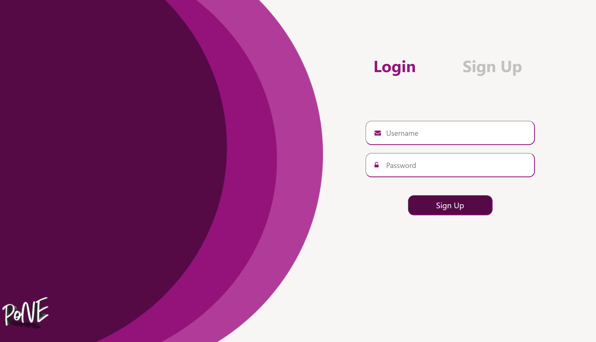 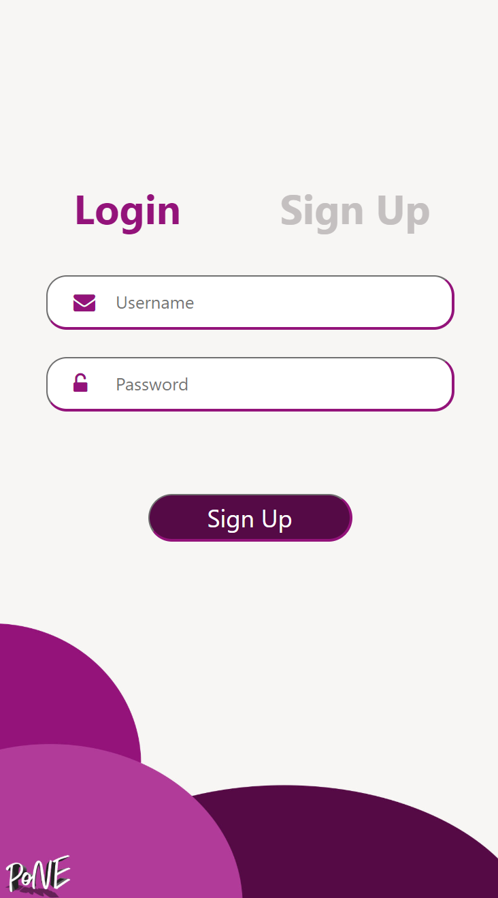Register Page
User-ul se poate inregistra folosind o parola si un username unic.
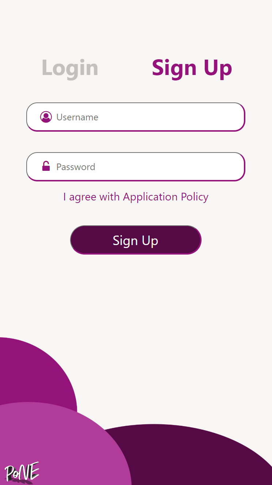Main Page
Pagina Principala contine detalii introductive despre functionalitatile aplicatiei. Din menu user-ul poate alege urmatoarele pagini pe care acesta doreste sa navigheze.
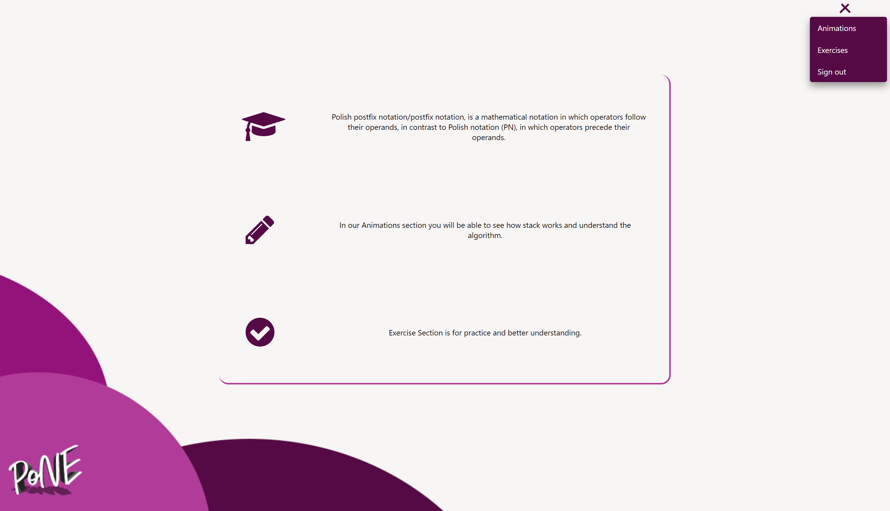Animations Page
Prezinta in mod vizual transformarea din notatie infixata in notatie postfixata, iar apoi arata calcularea unei valori in notatie postfixata.
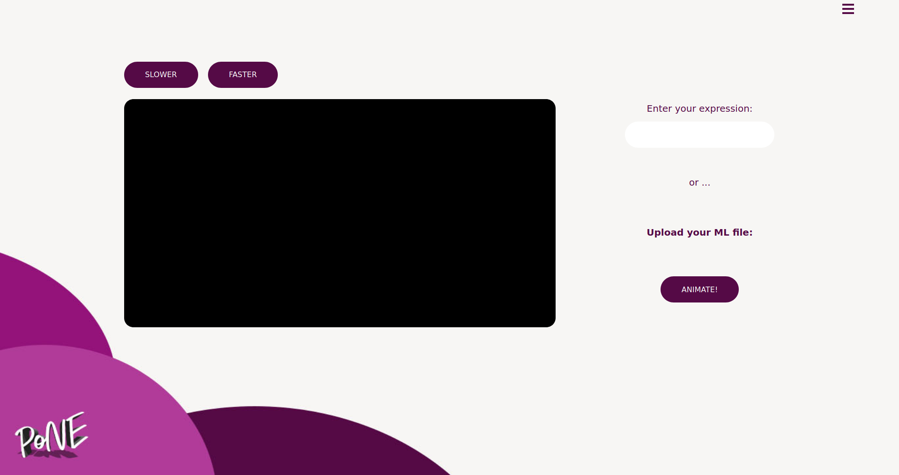 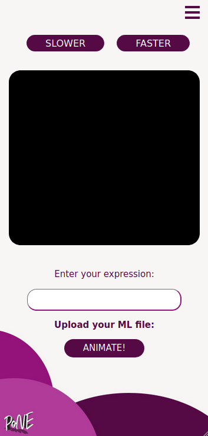Exercise Page
User-ul are la dispozitie o serie de exercitii predefinite, ce au ca prim scop exersarea cunostintelor dobandite folosind "Animations Page". Totodata, acesta poate intr-un mod facil sa comenteze exercitiile propuse.
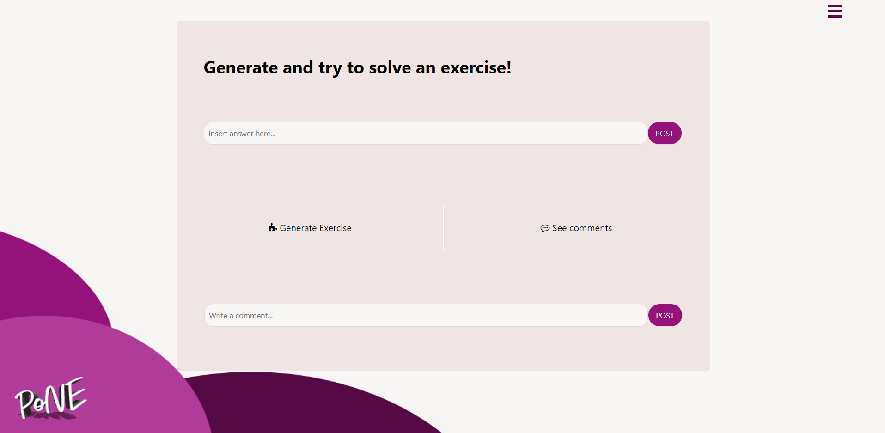 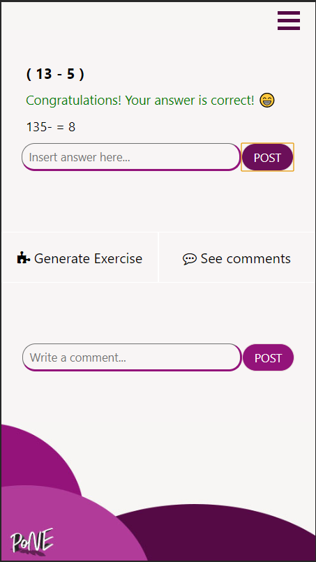User Progress Page
User-ul isi poate vedea exercitiile rezolvate pana la un anumit moment si comentariile aferente acestora.
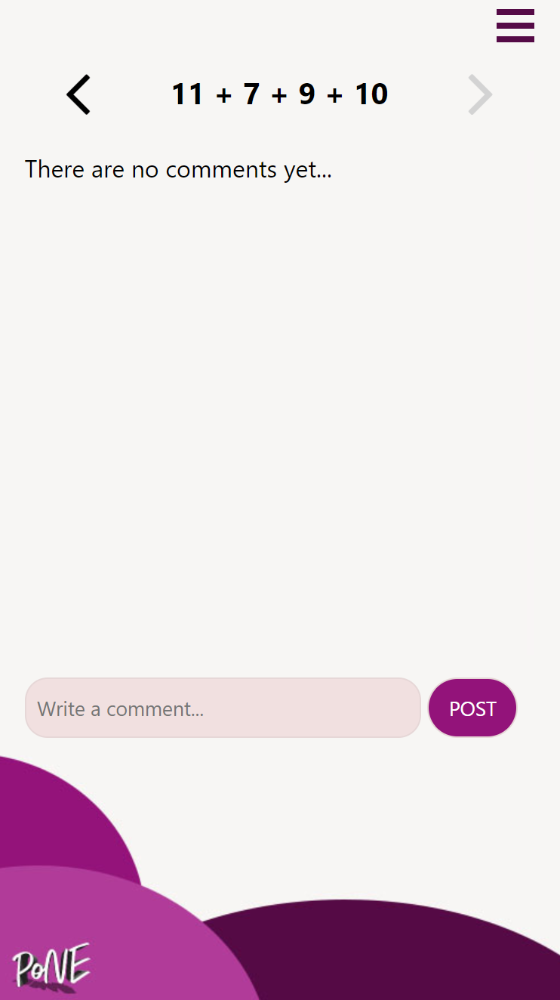 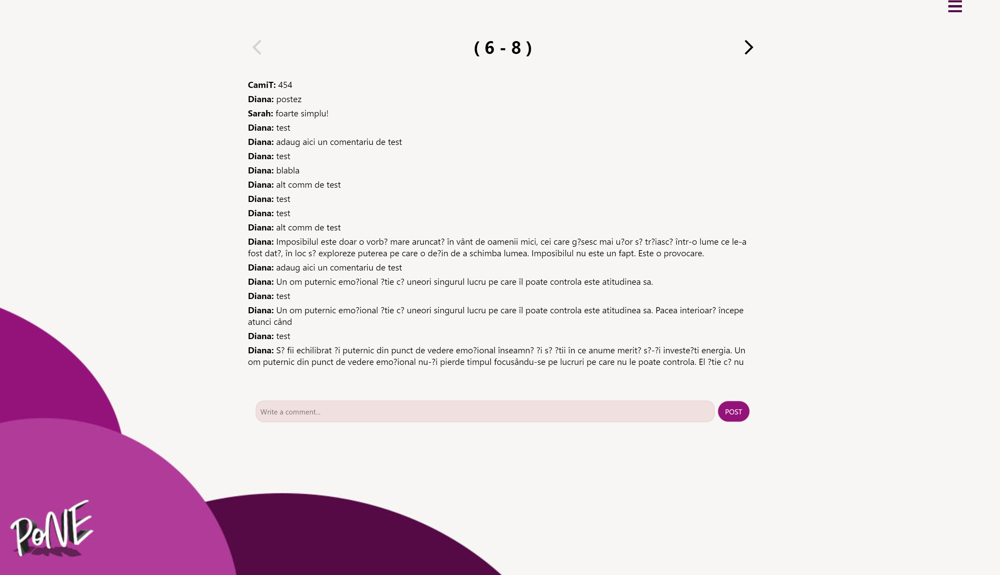Admin Page
Pagina ce faciliteaza administrarea bazei de date aferente aplicatiei accesibila doar userilor ce detin un cont de admin.
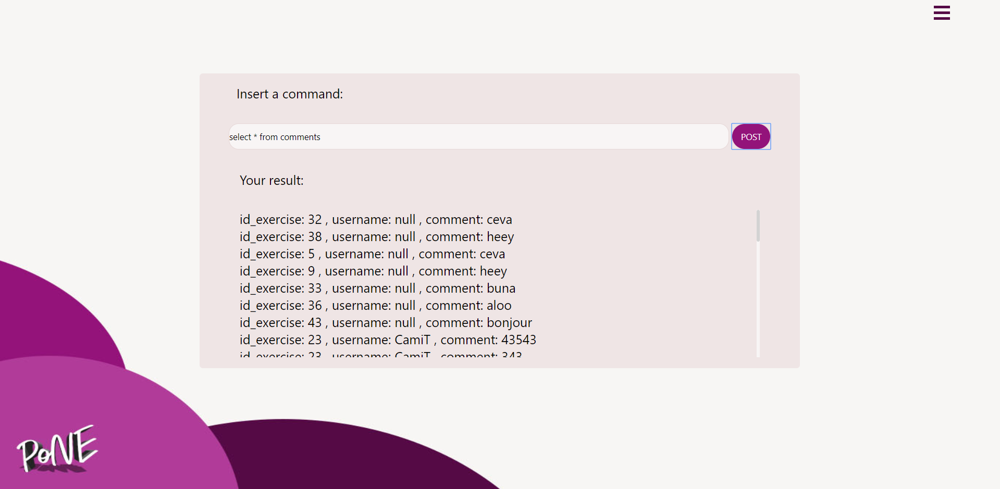Arhitectura Aplicatiei
Diagrame UML
Flow-ul Aplicatiei
- Prima data userul isi va face un cont nou, daca nu detine unul deja sau se logheaza in caz contrar.
- Odata logat userul va fi redirectionat spre pagina principala unde i se vor prezenta sectiunile principale alea aplicatiei. Aici va putea alege ce va face mai departe.
- Acesta poate alege din meniul principal sau din dropdown sa acceseze pagina de Animatii, Exercitii sau Progress.
- Pe pagina de animatii user-ul va putea introduce o expresie in notatie infixata, urmand ca aceasta sa fie transformata in notatie postfixata intr-un mod vizual ce are rolul de a facilita intelegerea conceptului, calculand totodata rezultatul acesteia. Utilizatorul poate alege viteza de derulare a animatiilor. Pagina faciliteaza si incarcarea unui fisier in format MathML.
- Utilizatorul poate sa rezolve diferite ecuatii pe Exercise page si sa adauge comentarii. Progresul acestuia va fi inregistrat in functie de exercitiile pe care incearca sa le rezolve. Progresul este vizibil selectand "See Progress" din dropdown
- Progresul unui utilizator consta in lista de exercitii pe care acesta a incercat sa le rezolve si comentariile aferente acestora. Scopul paginii este de a-i permite user-ului sa revizuiasca exercitiile anterioare.
- Deconectarea se realizeaza selectand optiunea "Sign Out" din dropdown menu.
- Admin page permite administrarea aplicatiei prin interogarea bazei de date. Accesul la aceasta pagina se realizeaza doar prin contul prestabilit de admin.
Code Snippets
Verificare ca user-ul sa fie logat atunci cand incearca sa acceseze o pagina interna:
window.onload = check_user();
function check_user() {
if (sessionStorage.getItem("loggedUserUsername") === null) {
location.assign("login");
}
}
Post User Progress request:
function postProgress() {
fetch('./progress.js', {
method: 'post',
body: `id_exercise=${sessionStorage.getItem('exerciseId')}
&username=${sessionStorage.getItem("loggedUserUsername")}`,
headers: { 'Content-type': 'application/x-www-form-urlencoded' }
}).then(function(resp) {
return resp.json();
}).then(function(jsonResp) {
console.log(jsonResp);
})
.catch(function() {
console.log(err);
})
}
PostFix Transformation function:
function infixToPostfix(expression) {
var stack = [];
stack.push('N');
var length = expression.length;
let result = [];
for (var i = 0; i < length; i++) {
var char = expression[i];
if (!isNaN(parseFloat(char)) && isFinite(char))
result += char;
else if (char == '(')
stack.push('(');
else if (char == ')') {
while (stack[stack.length - 1] != 'N' && stack[stack.length - 1] != '(') {
var c = stack[stack.length - 1];
stack.pop();
result += c;
}
if (stack[stack.length - 1] == '(') {
var c = stack[stack.length - 1];
stack.pop();
}
} else {
while (stack[stack.length - 1] != 'N' && prec(char) <= prec(stack[stack.length - 1])) {
var c = stack[stack.length - 1];
stack.pop();
result += c;
}
stack.push(char);
}
}
while (stack[stack.length - 1] != 'N') {
var c = stack[stack.length - 1];
stack.pop();
result += c;
}
return result;
}
Metoda principala in care se executa Joburi si se apeleaza recursiv Joburi complexe:
executeJobs(jobs, dt) {
if (Array.isArray(jobs)) {
if (jobs.length) {
let reset = false;
for (let i = 0; i < jobs.length; ++i) {
if (jobs[i] == null) {
if (!reset) { // delete elements [0, i]
jobs.splice(0, i + 1);
}
return true;
} else if (i === jobs.length - 1) {
reset |= this.executeJobs(jobs[i], dt);
if (!reset) { // delete elements [0, i]
jobs.splice(0, i + 1);
}
return true;
} else {
reset |= this.executeJobs(jobs[i], dt); // This is some sort of update
}
}
} else {
// No jobs? Just look pretty for now!
return false;
}
} else {
return jobs(dt);
}
}
Lucru cu baza de date: creearea tabelei "user_progress" cu constrangerile aferente:
function createTableUserProgress() {
var query = "CREATE TABLE IF NOT EXISTS user_progress (id_exercise int NOT NULL,username Varchar(30) NOT NULL,
CONSTRAINT fk FOREIGN KEY (username) REFERENCES users(username) ON DELETE CASCADE,CONSTRAINT pk_user_progress
PRIMARY KEY(id_exercise,username));"
conn.query(query, function(err, result, fields) {
if (err) throw err;
console.log('Table user_progress created');
});
}
Actualizarea unei linii. Asta presupune punctelor ce formeaza patratul, rotirea lor, apoi scalarea ca sa devina o linie:
Pentru toate operatiile matematice a fost folosit gl-matrix. Link in referinte.
update(dt) {
if (this.animationTime >= this.animationDuration) {
// Stabilize stuff
let currentLength = distance(this.startPoint, this.endPoint);
this.modelViewMatrix = mat4.create();
let startPosition = [this.startPoint, -1.0];
startPosition = startPosition.flat(1);
mat4.translate(this.modelViewMatrix, this.modelViewMatrix, startPosition);
mat4.rotate(this.modelViewMatrix, this.modelViewMatrix, this.angle, [0.0, 0.0, 1.0]);
mat4.scale(this.modelViewMatrix, this.modelViewMatrix, [currentLength, 1.0, 1.0]);
mat4.scale(this.modelViewMatrix, this.modelViewMatrix, [1.0, this.thickness, 1.0]);
return false;
}
let dist = distance(this.startPoint, this.endPoint);
let currentLength = lerp(0.0, dist, this.animationTime / this.animationDuration);
this.animationTime += dt;
this.modelViewMatrix = mat4.create();
let startPosition = [this.startPoint, -6.0];
startPosition = startPosition.flat(1);
mat4.translate(this.modelViewMatrix, this.modelViewMatrix, startPosition);
mat4.rotate(this.modelViewMatrix, this.modelViewMatrix, this.angle, [0.0, 0.0, 1.0]);
mat4.scale(this.modelViewMatrix, this.modelViewMatrix, [currentLength, 1.0, 1.0]);
mat4.scale(this.modelViewMatrix, this.modelViewMatrix, [1.0, this.thickness, 1.0]);
return true;
}
Functie care trimite fisierul cerut la client:
function serveFile(req, res, ext) {
handleGetRequest(req, res, function() {
if (req.url === '/.html')
req.url = "/main.html";
fs.readFile("./src" + req.url, (err, data) => {
if (err) {
req.url = "/unknown.html";
fs.readFile("./src" + req.url, (err, data) => {
res.writeHeader(200, { 'Content-Type': ext });
res.write(data);
res.end();
});
return;
}
res.writeHeader(200, { 'Content-Type': ext });
res.write(data);
res.end();
});
});
}
Referinte
- https://www.geeksforgeeks.org/stack-set-2-infix-to-postfix
- https://github.com/toji/gl-matrix
- https://developer.mozilla.org/en-US/docs/Web/API/WebGL_API/Tutorial
- https://developer.mozilla.org/en-US
- https://www.w3schools.com
- https://www.w3schools.com/howto/howto_css_menu_icon.asp
- https://www.w3schools.com/howto/howto_css_custom_scrollbar.asp
- https://w3c.github.io/scholarly-html/